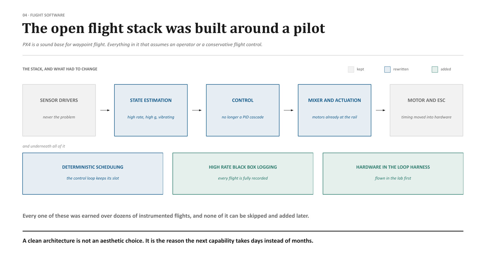
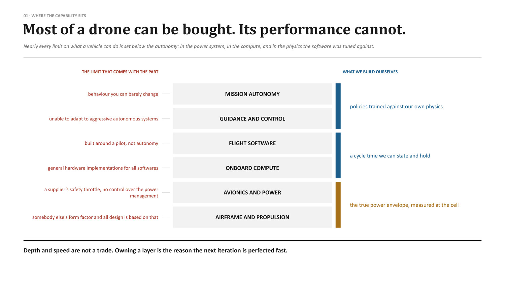

Flight Software Stack
Built upon nearly two decades of global open-source autopilot maturity (PX4, ArduPilot), re-engineered for natively autonomous, high-subsonic strike weapons requiring direct-actuator neural control, microsecond deterministic scheduling, and extreme flight envelopes.
Honouring two decades of open-source flight maturity
The global open-source autopilot community—anchored by ArduPilot since 2009 and the PX4 Autopilot project since 2011—revolutionized unmanned aviation. Over nearly twenty years of relentless community engineering, these codebases accumulated millions of operational flight hours, establishing the foundational standards of the modern drone industry.
The achievements of this ecosystem are monumental:
- Universal Device Driver Abstraction: Robust, battle-tested communication drivers across I2C, SPI, CAN, and UART interfaces for hundreds of commercial sensors and peripheral chips.
- Standardized Telemetry: The MAVLink protocol, providing a universal lingua franca for command, control, and state broadcasting.
- Advanced State Estimation: Sophisticated Extended Kalman Filter implementations (EKF2 and EKF3) fusing multiconstellation GNSS, barometers, magnetometers, and optical flow for stable commercial flight.
- Democratization of Flight: Proving that autonomous robotic flight could be realized on low-cost microcontrollers, spawning entire commercial, agricultural, and academic industries.
Apollyon Dynamics acknowledges and builds upon this extraordinary heritage. We retain the community's robust low-level hardware communication drivers and bus abstractions. However, when transitioning from commercial utility quadcopters to natively autonomous, high-subsonic strike weapons, the fundamental architectural assumptions of open-source firmware break down completely.
Why open firmware cannot be used out-of-the-box for strike weapons
Open-source flight stacks were architected around specific operational paradigms that directly conflict with the physics and operational realities of sovereign strike weapons:
| Domain | Open-source firmware assumption (PX4 / ArduPilot) | Autonomous high-speed strike weapon reality |
|---|---|---|
| Operator presence | Assumes an RC transmitter, ground control station, and safety pilot with manual override modes (Manual, Acro, AltHold, Loiter, RTL). | Natively autonomous: Zero pilot in the loop, zero manual override, no RC link, and no return-to-launch logic from rail launch to target impact. |
| Control architecture | Decoupled cascaded PID loops (Position → Attitude → Angular Rate → Mixer) assuming linear dynamics at <30 m/s. | Coupled non-linear dynamics: At Mach 0.8 (250+ m/s) and high dynamic pressure, cross-coupling and surface reversal require direct-actuator neural control. |
| Actuator saturation | Mixer sacrifices secondary axis authority when motor/servo channels hit 100% saturation rails. | Hard saturation operation: Weapon spends substantial terminal dive time on actuator rails; requires direct coupled control allocation. |
| Scheduling & determinism | Cooperative workqueue threads subject to 5–15 ms latency jitter and dynamic OS scheduling overhead. | Microsecond hard real-time: 500 Hz direct control policy and high-speed optical correlation demand deterministic sub-millisecond execution. |
| High-G dynamics & shock | EKF tuned for low-vibration commercial airframes; clips or resets under severe shock or sustained 7G turns. | High-G resilient estimation: Must maintain uninterrupted state tracking under rocket booster launch and violent evasive maneuvers. |
Removing the human pilot does not simplify the flight software—it vastly increases the demands placed upon it. In an open-source drone, when an estimator drifts or a motor saturates, the software triggers a failsafe or prompts the human operator to take manual stick control. In an expendable cruise missile or high-speed interceptor traveling at hundreds of metres per second, no human intervention is possible. The software must resolve aerodynamic non-linearities autonomously and instantaneously.

What was kept, what was rewritten, and what was added
Apollyon preserves the battle-tested physical device drivers of the open-source community while completely replacing the control and scheduling layers with a hardened sovereign execution core.
| Layer | Status | Engineering rationale |
|---|---|---|
| Sensor device drivers | Kept & hardened | Physical bus communication (SPI, I2C, CAN FD) was never the failure point; retained and vetted for memory safety. |
| High-G state estimation | Rewritten | Replaced with a tightly coupled UKF engineered to withstand high vibration, booster shock, and multi-axis 7G sustained turns without filter divergence. |
| Guidance & control core | Rewritten | Discarded PID cascade; replaced with a 500 Hz direct-actuator neural policy conditioned on our flight-validated physics backbone. |
| Actuator allocation | Rewritten | Direct multi-axis torque allocation that operates deterministically when elevons, rudders, or thrusters are fully saturated. |
| Deterministic scheduler | Rewritten | Hard real-time static schedule with zero dynamic heap allocation and isolated CPU core affinity—see Edge Compute & Custom Inference Engine. |
| Microsecond black-box logging | Added | Lossless microsecond-stamped logging capturing raw register states, bus timings, and actuator current for post-sortie simulation mismatch analysis. |
| Hardware-in-the-Loop (HIL) harness | Added | Integrated digital-analog testing harness executing the exact production flight binary against simulated real-time aerodynamics. |
Hardware-in-the-Loop (HIL) testing pipeline
Software is never qualified in the air. Every firmware build undergoes thousands of simulated sorties inside our Hardware-in-the-Loop testing harness before a weapon ever reaches the launch rail:
- Identical Production Binaries: The flight computer running on the HIL bench executes the exact, bit-for-bit compiled binary deployed to the field. No special "simulation flags" or altered timing paths are permitted.
- Full-Flight Sortie Emulation: The HIL bench injects synthetic high-rate IMU signals, barometric pressure profiles, radar altimeter returns, and optical scene feeds, verifying complete 800 km missions from booster ignition to terminal dive.
- Automated Fault Injection: The test harness programmatically introduces jammed control surfaces, motor failures, electronic warfare RF interference, and sensor dropouts, ensuring the flight software executes robust fail-operational contingencies.
Why owning the execution core compounds velocity
Most of an airframe can be purchased from tier-1 suppliers, but vehicle performance cannot. Third-party commercial stacks arrive with foreign constraints: conservative safety throttles, non-deterministic latency jitter, and architectures designed around remote pilots.
| System layer | Limit imposed by commercial / off-the-shelf software | What Apollyon builds & owns |
|---|---|---|
| Mission autonomy | Rigid waypoint state machines requiring manual GCS overrides. | End-to-end sovereign mission logic with autonomous target re-acquisition. |
| Flight control | Conservative PID gains unable to stabilize transonic transitions. | Direct-actuator neural policies operating up to dynamic physical boundaries. |
| Compute runtime | Generic OS scheduling with unpredictable latency spikes. | Deterministic sub-millisecond execution with isolated core affinity. |
| Test infrastructure | Manual bench testing relying on post-crash guesswork. | Lossless microsecond logging feeding our closed-loop physics backbone. |

Platforms carrying this subsystem
Interfaces with: Robust Control for Fast Platforms, Edge Compute & Custom Inference Engine, High-Speed GNSS-Denied Navigation.